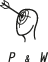

Klarer Auftritt. Klare Botschaft. Klare Zahlen.
Sieht gut aus.
Verkauft noch besser.
Mag. Peter Preminger - P&W
1060 Wien, Köstlergasse 6-8/2/22
Mobil: +43 (0) 699 15424355 p.preminger@preminger.at
Mag. Peter Preminger - P&W
1060 Wien, Köstlergasse 6-8/2/22
Mobil: +43 (0) 699 15424355 p.preminger@preminger.at